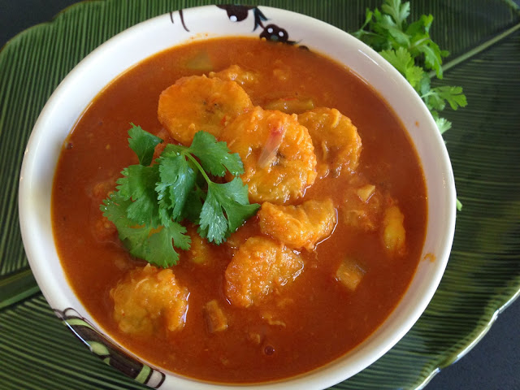

Plantain Mango Soup

Description
This is an easy vegan and gluten free recipe.
It is a tropical inspired soup with fruity and sweet ingredients.
It's perfect for a hot meal after work or to impress the housemates with.
Ingredients
- 3 ripe plantains
- 165g of fresh, peeled and cubed mango
- 2 tps of tomato paste
- 2-4 minced garlic cloves
- 500ml of vegetable broth
- 1 tps of dried oregano
- 1 tps of paprika powder
- 1 tps of red chilly poweder
- 1/2 tsp of tumeric powder
- 1 tbs of extra virgin olive oil
- Salt as per taste
- Chopped cilantro for garnish
Steps
- Peel and slice plantain to cook them. (either steam or pressure cook)
- Heat olive oil on medium heat and sauté minced garlic till slightly brown
- Add mango cubes, tomato paste, broth, salt and spices and stir.
- Cook covered on medium heat for about 6-8 minutes, until mango is cooked and soft.
- Before turning of the heat, add cooked plantain sliced.
- Check the seasoning and add more if necessary
- Garnish with cilantro.
Back to top
Back to home